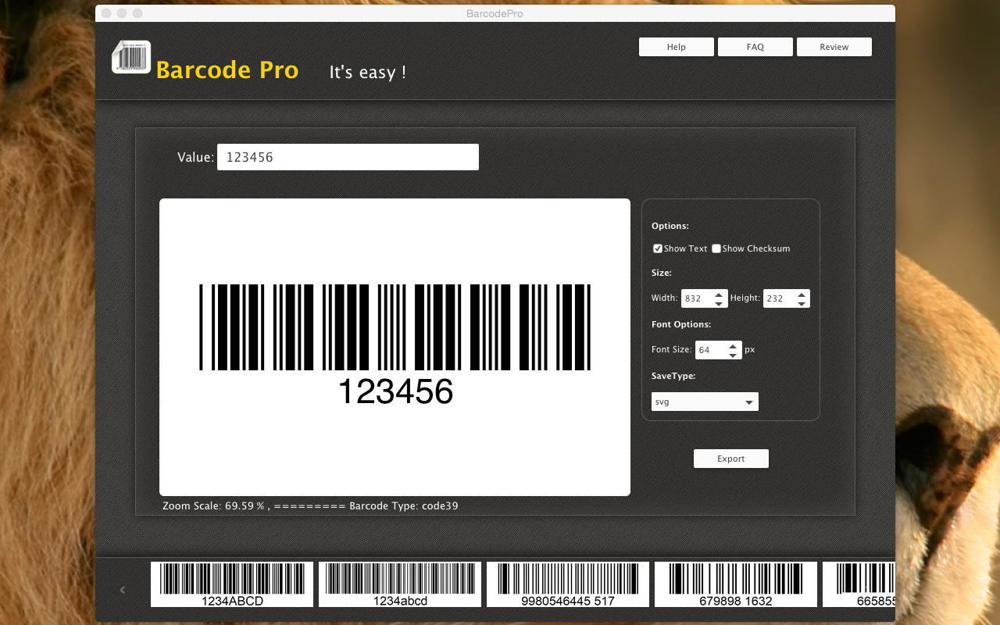
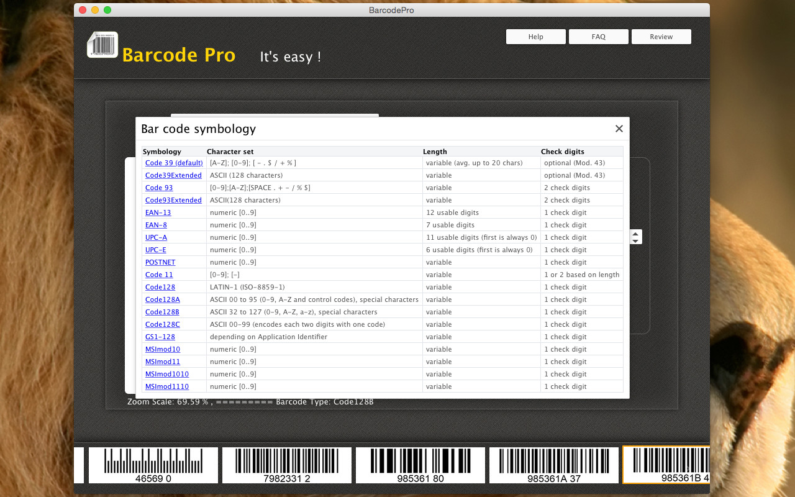
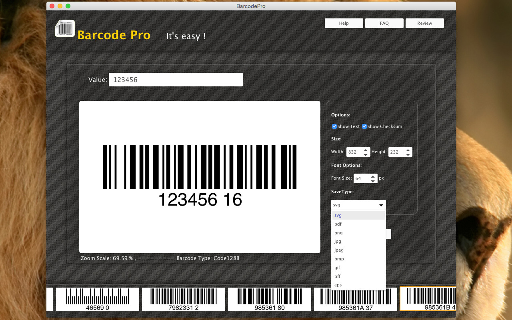
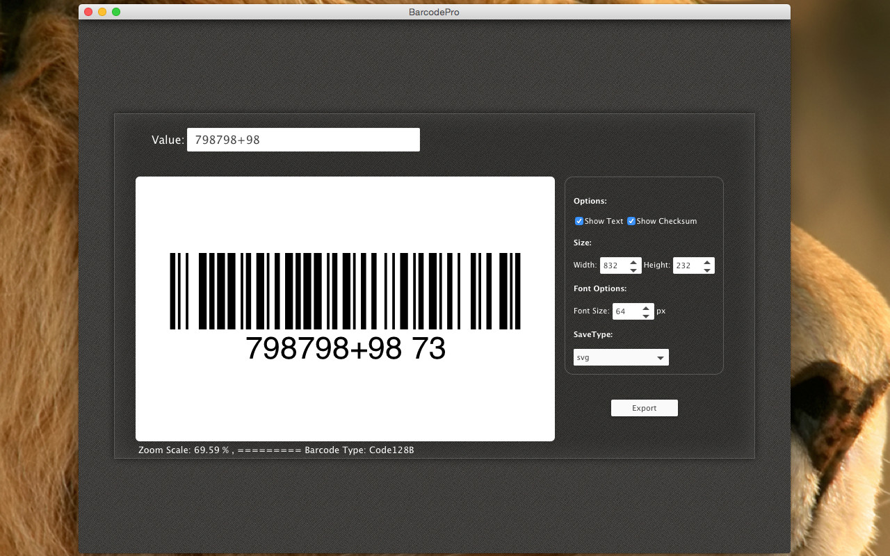

Download
Free | MacOS x 10.7.5 or later. Buy
$19.99 | MacOS x 10.7.5 or later. Apple app store
$24.99 | MacOS x 10.7.5 or later.
Free | MacOS x 10.7.5 or later. Buy
$19.99 | MacOS x 10.7.5 or later. Apple app store
$24.99 | MacOS x 10.7.5 or later.
A barcode is an optical machine-readable representation of data relating to the object to which it is attached. Originally barcodes systematically represented data by varying the widths and spacings of parallel lines, and may be referred to as linear or one-dimensional (1D). Later they evolved into rectangles, dots, hexagons and other geometric patterns in two dimensions (2D). Although 2D systems use a variety of symbols, they are generally referred to as barcodes as well. Barcodes originally were scanned by special optical scanners called barcode readers. Later, scanners and interpretive software became available on devices including desktop printers and smartphones.
BarocdePro Features
Support barcode classes:
- EAN8
- EAN13
- UPCE
- UPCA
- Code11
- Code39
- Code39Extended
- Code93
- Code93Extended
- Code128
- Code128A
- Code128B
- Code128C
- MSImod10
- MSImod11
- MSImod1010
- MSImod1110
- GS1-128
- POSTNE
Support export image types:
- PNG
- JPG
- JPEG
- TIFF
- GIF
- EPS
- BMP
- SVG